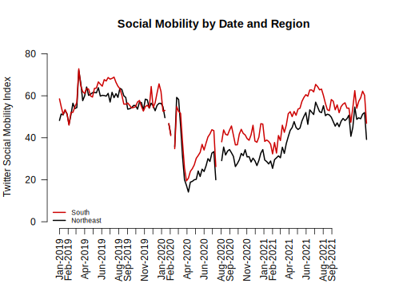

4.9 Causal claims from before vs. after comparisons
What types of research questions could these trends generate?

What would you want to know about how movement has changed since the start of COVID?
- We will do an initial exploration to reveal some of the difficulties with making causal claims when we do not have the luxury of conducting an experiment. This discussion will continue in the next section.
One thing that becomes apparent in the trend data is that mobility decreased substantially after mid-March of 2020. As many of us know all too well, that corresponds to shortly after the onset of the pandemic in the United States.
With that said, we may ask
- What specifically caused the sudden decrease in mobility?
- Did the announcement of federal guidelines to “slow the spread” have a causal effect on mobility?
- Did the rise in COVID cases during that time have a causal effect on mobility?
- Did gubernatorial actions at the state level cause mobility to decrease?
For each of these questions, we could implement the potential outcomes framework.
- For example, we want to compare mobility (\(Y\)) in the state of the world where a governor has announced social distancing and stay-at-home restrictions (\(Y(1)_{governor}\)) to mobility in a state of the world where the governor has not announced those restrictions (\(Y(0)_{governor}\)), holding everything else the same. Here we run into two problems.
- Our friend, the fundamental problem of causal inference. We only get to observe one state of the world for any particular governor.
- It would be hard to turn this into an experiment. We cannot go back in time and ask governors to come together for a field experiment that randomly assigns which states get restrictions and which do not.
- While there is variation– not all states had restrictions, this was not random.
- Likewise, if we wanted to compare mobility (\(Y\)) in the state of the world where the federal government has announced social distancing and stay-at-home restrictions (\(Y(1)_{president}\)) to mobility in a state of the world where the president has not announced those restrictions (\(Y(0)_{president}\)), holding everything else the same. Here we run into the same two problems.
- The fundamental problem of causal inference. We only get to observe one state of the world at any given point in time.
- It may be hard to generate an experiment that simulates the idea of these two states of the world.
So what can we do?
- Researchers try to form comparison groups, in a strategic way, with the data they have (i.e., “observational” or “non-experimental” data).
- Because they cannot randomly assign two different experiences of the world, instead they choose two cases or two groups of cases that
- Seem extremely similar except
- One has the treatment of interest, and one does not
Example: Before vs. After Comparison
Let’s examine social mobility just before vs. just after the federal announcement of social distancing guidelines to stop the spread of COVID-19.
- To do so, we will draw a verticle line at March 16, 2020
- Note we use
abline(v=)to indicate a vertical line at a location
- Note we use
- We will also add text to inform views what that line represents
- Note we use
text(x= , y=, labels)to indicate where to put text
- Note we use
plot(x=covid$Dates,y=covid$Northeast,
type="l", pch=15,
main="Social Mobility by Date and Region",
ylab="Twitter Social Mobility Index",
xlab="",
ylim = c(0, 80), las=1,
lwd=2,
bty="n",
xaxt="n")
lines(x=covid$Dates,y=covid$South, col="red3", lwd=2)
axisdates <- seq(as.Date("2019-01-01"), as.Date("2021-09-01"), by="month")
axis(1, at = axisdates, format(axisdates, "%b-%Y"), las=2, cex.axis=.7)
legend("bottomleft", col=c("red3", "black"),
c("South", "Northeast"), cex = .7, lty=1,lwd=2,
bty="n")
## add dashed blue vertical line
abline(v=as.Date("2020-03-16"), lty=2, col="dodgerblue", lwd=1.5)
## add text near the line
## the \n breaks the text into different lines
text(x=as.Date("2020-05-01"), y=65, labels = "Federal \n Announcement", cex=.6)
We see mobility does appear to be lower after the announcement relative to before the announcement. Is this causal?
- Assumption: We would want to be able to argue that social mobility in the weeks following the announcement (after time period) would look similar to social mobility in the weeks prior to the announcement (before period) if not for the federal announcement
- That the before vs. after time periods would be similar in any meaningful way if not for the presence of the treatment in the after period.
Does this seem like a plausible argument? Could other things (confounders) occurring around the time of the federal announcement also have caused the steep decline in social mobility?
- If we think something else happened around the same time that might have caused mobility to go down anyway, then we may be doubtful that this is a causal effect.
We will continue to discuss similar causal designs in the next section.